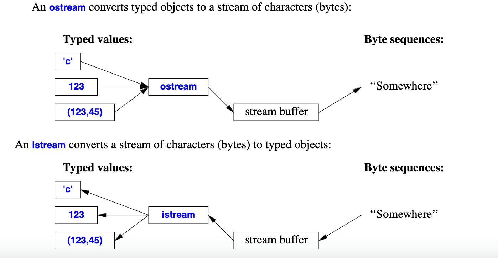

OOP笔记¶
I/O streams¶
istream和ostream的图示
Info

operators¶
The operator << is used as an output operator on objects of type ostream;
The operator >> is used as an input operator determines what input is accepted and what is the target of the input operation;
>>的读入规则¶
若读入类型为integer，则读入终止于非digit字符；若读入string，则终止于空格或回车
也可以用如
getline(cin,str)来读入一整行，并抛弃掉末尾的newline
IO state¶
int i; while(cin >> i);会读入i直到读入失败为止，彼时cin >> i会return false，而且cin.fail()会return true，表明istream无法读取下一个；此时可以通过cin.clear()来重新设置istream的状态
I/O of User-Defined Types¶
例子：
struct Entry {
string name;
int number;
};
ostream& operator<<(ostream& os, const Entry& e)
{
return os << "{\"" << e.name << "\", " << e.number << "}";
}
istream& operator>>(istream& is, Entry& e)
// read { "name" , number } pair. Note: formatted with { " " , and }
{
char c, c2;
if (is>>c && c=='{' && is>>c2 && c2=='"') { // star t with a { "
string name; // the default value of a string is the empty string: ""
while (is.get(c) && c!='"') // anything before a " is part of the name
name+=c;
if (is>>c && c==',') {
int number = 0;
if (is>>number>>c && c=='}') { // read the number and a }
e = {name ,number}; // assign to the entry
return is;
}
}
}
is.state_base::failbit; // register the failure in the stream
return is;
}
Formatting¶
最简单的formatting controls是manipulators，在cout << 1234 << ',' << hex << 1234 << ',' << oct << 1234 << '\n';
// print 1234,4d2,2322
constexpr double d = 123.456;
cout << d << "; " // use the default
<< scientific << d << "; " // use 1.123e2 style
<< hexfloat << d << "; " // use hexadecimal notation
<< fixed << d << "; " // use 123.456 style
<< defaultfloat << d << '\n'; // use the default
// C++ uses rounding instead of truncating
cout.precision(8);
cout << 1234.56789 << ' ' << 1234.56789 << ' ' << 123456 << '\n';
// 1234.5679 1234.5679 123456
cout.precision(4);
cout << 1234.56789 << ' ' << 1234.56789 << ' ' << 123456 << '\n';
// 1235 1235 123456
File stream¶
In <fstream>, the standard library provides streams to and from a file:
+ ifstream for reading from a file
+ ofstream for writing to a file
+ fstream for reading from and writing to a file
ofstream ofs("target"); // ‘‘o’’ for ‘‘output’’
if (!ofs) error("couldn't open 'target' for writing");
fstream ifs; // ‘‘i’’ for ‘‘input’’
if (!ifs) error("couldn't open 'source' for reading");
String stream¶
In <sstream>, the standard library provides streams to and from a string:
+ istringstream for reading from a string
+ ostringstream for writing to a string
+ stringstream for reading from and writing to a string.
...不清楚怎么用yet
The vector¶
用时需要#include <vector>
基本规则和操作¶
vector<class T> amounts;
//vector<type> name;
amounts.empty();
// return true if amounts is empty
amounts.size();
amounts.clear();
// empty amounts
amounts.push_back(const T& elem);
/* append to amounts.
if elem is a direct object instead of a pointer,
makes a deep, independent copy of that object. */
amounts.pop_back();
amounts[2];
// access using operator[]
// iterator
amounts.begin();
amounts.end();
amounts.erase(iterator where);
/* remove element addressed by where
and return an iterator pointing to the elements
after the removed one*/
Changes to a vector invalidate all existing iterators. As a result, previously generated iterators could reference meaningless data.
The map¶
基本规则和操作¶
pair<iterator, bool> insert(const pair<Key, Value>& newEntry);
/* if Key already exists in map, return (an iterator addressing
the pair stored inside the map on behalf of the key, false);
Otherwise return (..., true), and insert the (key, value) pair
into the map;
*/
iterator find(const Key& key);
// ...
Inline functions¶
原理¶
区别于正常函数与主程序分开存放，inline函数在调用时将它的definition，即运行代码贴在调用处。这样就避免了正常函数调用时需要存储返回地址和instruction pointer跳转等操作带来的时间消耗。 但这也同时导致了使用inline函数会是程序更长，属于用大空间换短时间。
适用范围¶
也正是由于这个特性，某些函数不适合用inline： 1. 函数本身的运行时间远大于调用所需时间 因为这样调用节省的时间忽略不计，白白浪费空间 2. 函数并没有被频繁调用 这样就没有发挥出inline的用处
使用方法¶
在声明或定义函数时增加前缀inline即可，如inline double square(double x) { return x * x; }
compiler未必会满足inline的需求；如果该函数太大，或recursive，inline都会被忽略，当作正常函数
Reference¶
- 规则：必须在声明reference变量时初始化，和某变量绑定（成为其别名），不可二次绑定
Inheritance and Composition¶
scope and access¶
对于派生类，它和外界都不能访问基类的private成员，但是它可以访问基类的protected成员，而外界不能访问protected成员。
同一个类的不同对象obj1和obj2，两者可互相访问其private成员
| inheritance type | public member | protected member | private member |
|---|---|---|---|
class B : private A |
private in B | private in B | inaccessible |
class B : protected A |
protected in B | protected in B | inaccessible |
class B : public A |
public in B | protected in B | inaccessible |
friend¶
可将自己的成员授权给其他函数、类...，但其他函数、类并没有授权给自己
基类、派生类、派生类成员的构造顺序¶
派生类在构造时，先调用基类ctor，再调用自身ctor。派生类在析构时正好相反，先调用自己的dotr，再调用基类的dtor。
- ctor顺序：基类 > 派生类成员 > 派生类
- dtor顺序：派生类 > 派生类成员 > 基类
初始化列表的参数顺序是没有意义的，初始化并不会按照它来执行
name hiding¶
若在派生类中重定义了一个基类的函数，则基类中的所有重载的同名函数都不可访问
此处关键字virtual（在多态中）就派上用场了
Upcasting¶
为了避免截断(truncation)，一般通过指针来将一个派生类cast为基类
Polymorphism（多态）¶
virtual¶
用基类的指针，调用派生类各自的函数。(Dynamic binding: call the function according to the real(not declared) type of the object)
基类的析构函数一定要写成virtual
若不覆盖基类virtual函数，则派生类中对应的vptr指向的函数table中，此未覆盖的函数指向基类函数的地址
virtual的内存布局¶
在基类中，类模板的首个位置存放virtual pointer，指向该类的virtual函数表首地址
return type relaxation¶
The copy constructor （拷贝构造函数）¶
若没有定义copy ctor，编译器会自动生成默认copy ctor
memberwise copy: 对于原生类型(int, float...)直接赋值；对于class成员，递归调用copy ctor
默认copy ctor对于指针类型的复制会有问题，一般需要自定义copy ctor
格式：
T::T(const T&);
T t1;
// copy ctor usage
T t2 = t1; // equal to T t2(t1);
T t3(t1);
T foo() {
return T();
}
T t4 = foo(); // another copy ctor usage
若没有写，则c++编译器会生成一个默认拷贝构造函数。当通过=来赋值时，拷贝右值对象的每个字段给左值(memberwise initialization)。
若成员中有其他class，则递归拷贝构造该字段。
Warning
若成员中有指针变量，需要着重考虑指针的拷贝方式，是直接拷贝指向地址，还是拷贝一份指向的对象再指向拷贝对象。否则在析构时，有可能发生重复析构的报错
拷贝优化¶
draft
若某函数return一个T(s)，即临时构造的对象；而该函数被作为右值赋给某T对象，则会被优化为该T对象直接按s来进行临时构造
为了避免重复冗余的copy构造，当使用vector等容器时，可以预留容器容量，然后再向容器中添加元素。通过std::vector.reserve(size)来预留容量，就可以有效减少vector扩容带来的copy操作
std::vector mechanism
vector被初始化时capacity为0。当push_back/emplace_back时，若capacity不够，则重新分配一块大小为原来两倍的内存给此vector，capacity变为2倍（第一次变为1），然后把原来内存中的元素依次copy到新的内存中
static修饰符¶
static变量回顾：
- persistent storage: allocated once at a fixed address
-
visibility: internal linkage（其他文件无法通过
extern来访问该变量） -
函数中的static class变量
第一次执行该构造语句时进行构造和初始化，后续不再构造。
-
class中的static变量
不依赖于对象的存在，ctor时static变量并未被构造。是所有对象共享的数据。
静态成员的定义在global scope下进行，如
-
class中的static函数
只能访问class中的static变量，不能访问某对象中的变量
operator overloading（运算符重载）¶
极少数运算符不可重载；运算符重载后优先级不变
格式：
/* unary operator */
Integer operator-() const {
return Integer(-i);
}
Integer& operator++(){ // prefix++
this->i += 1;
return *this;
}
Integer operator++(int){ // postfix++
Integer old(*this);
++(*this);
return old;
}
/* binary operator */
// within class
Integer operator+(const Integer & i1) {return ...;}
// "3 + Int" is invalid while "Int + 3" is valid
// in global scope
Integer operator+(const Integer & i1, const Integer & i2)
{ return ...; }
copy assignment¶
=运算符若没有定义，编译器会自动生成默认重载运算符，进行memberwise assignment
operator ()¶
A functor, overloads the function call.
#include <functional>
struct F {
void operator()(int x) const {
std::cout << x << "\n";
}
}; // F is a functor class
F f; // f is a functor
f(2); // calls f.operator()
void transform(vector<int>& v, function<int(int)>& f)
{
for(auto & ele : v) {
ele = f(ele);
}
}
[a](int x){return x * a;} // anonymous function
// equals to create a class with functor overloading
class mul_by {
private:
int a;
public:
mul_by(int a) : a(a) {}
int operator()(int x) const {return x * a;}
}
Conversion operator¶
隐式转换 T->C
C(const & T) { ... } // ctoroperator C() { ... } // conversion operator overloading
struct pathname {
std::string name;
}
struct rational {
int numerator;
int denominator;
operator double() {
return numerator / (double)denominator;
}
}
Stream¶
stream在做输入输出时，内部状态会改变
-
extractor (>>)
-
inserter (<<)
Template¶
function overloading¶
参数列表必须不同
Default argument¶
- 默认值指定从右到左（不能跳着来）
- 声明时规定默认值，定义时不再规定
template¶
Generic programming
-
function template
-
class template(container)
stack<int>
template instanstiation¶
遇到模板的某具体类型时，生成一个该类型的function/class。相当于模板自动生成实例化函数/类。
若有非模板的普通函数可以匹配，则优先调用此函数，否则寻找模板
expression parameter¶
Member template¶
template <typename T>
struct complex {
template <class U>
complex(const U & other) : real(other.real), imag(other.imag) {}
}
Iterator¶
对于不同的数据结构提供统一的线性遍历的接口，即Iterator
the associated type¶
iterator_traits
template specialization¶
- full specialization
- partial specialization
Exception¶
下标越界
throw语句抛出异常¶
- 控制流向前退，直到第一个handle此异常的try-catch语句(handler)
- 向前退的过程遵循调用链
- 一层层退栈，在栈上的对象被析构
语法¶
throw exception;throw;
选择handler¶
- 一个try block可以有任意个handler
- handler以出现顺序来依次检查
- check for exact match
- apply base class conversions (reference or pointer type only)
- catch-all handler
catch (...) {}
Example
产生派生类异常时，若先handle基类异常，则不会管后续的派生类异常；
Note
正常情况下，越来越放宽exception的自由度，所以基类异常handler应该放在派生类之后，而catch-all handler必须放在最后一个handler
析构函数(destructor)中不可抛异常
抛出的Exception若最终没有接受者(Uncaught exception)，std::terminate()会被调用，程序终止
Smart Pointer¶
unique_ptr¶
shared_ptr¶
weak_ptr¶
Named Cast¶
-
static_cast用于将指向基类的指针转换为指向派生类的指针
-
dynamic_cast运行时检查，若继承不是多态关系(virtual)则报错
-
reinterpret_cast -
const_castconst_cast 运算符会将 this 指针的数据类型更改为 CCTest *，以允许修改成员 number
Multiple Inheritance¶
Namespace¶
- a scope just like a class